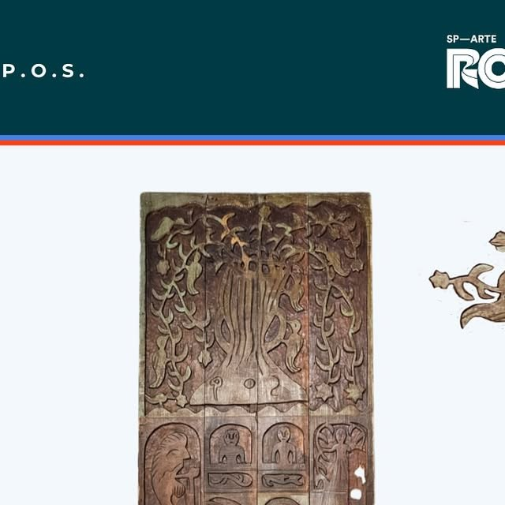

Paulo Orlando da Silva (P.O.S.)
Talhas precisas em madeira reaproveitada, com desenho simplificado, ramagens, frutos e pássaros.
Paulo Orlando da Silva é o artista antes identificado apenas pelas iniciais POS. Ele assinava suas peças como P.O.S. e construiu uma obra marcada por madeira antiga, baixo-relevo, figuras simplificadas e composições cheias de folhagens e aves.
Paulo nasceu em 1932 em Pernambuco. As fontes localizam sua origem no Engenho Sete Riachos, também registrado em outra referência como Sete Ranchos, no município de Amaragi/Amaraji. Antes de se firmar no entalhe, trabalhou no campo, em engenhos, como pastorador de boi e como ajudante de pedreiro.
Por volta de 1955, mudou-se para o Recife. Seu caminho artístico começou com experiências em massa de papel, incentivadas por uma moradora de Iputinga. Depois, passou à madeira velha e de demolição, que considerava mais expressiva e durável do que a madeira nova.
Suas talhas combinam desenho e entalhe em formas simplificadas. Com serrote, formão, grosa e enxó, produziu peças que podiam ir de pequenos objetos a painéis de até dois metros. A madeira de demolição, muitas vezes já marcada por camadas antigas de tinta, era queimada a maçarico e incorporada à aparência final da obra.
Ramagens, frutos e pássaros aparecem junto a temas religiosos e populares, como Adão e Eva, Cristo, Última Ceia, maternidades, Lampião e Maria Bonita. Em seu modo de compor, braços, pernas, folhas e molduras se unem em uma mesma superfície talhada.
Da madeira velha, Paulo fazia nascer desenho, textura e memória.
Para observar na peça
- Assinatura ou iniciais P.O.S.
- Madeira de demolição e camadas antigas de tinta
- Entalhe em planos: figura ressaltada e fundo rebaixado
- Ramagens, frutos, pássaros e figuras humanas simplificadas
Materiais e técnica
Galeria de peças e referências de estilo
Obras e peças públicas reunidas para reconhecer linguagem, materiais e técnica. As peças da exposição são vistas apenas ao vivo.

Fontes e créditos
- Galeria Karandash — Paulo Orlando da Silva (P.O.S.) https://www.instagram.com/p/C-U-MCUpkJA/
- O Reinado da Lua: escultores populares do Nordeste Silvia Rodrigues Coimbra, Flávia Martins de Albuquerque e Maria Letícia Duarte. 4ª ed., Recife: Caleidoscópio/Fundarpe, 2010. Verbete “Paulo”, pp. 297–300.
- Centro Nacional de Folclore e Cultura Popular — Artesanato em madeira: Olinda, PE Registro de entrevista com Adriano José Jordão de Souza e Paulo Orlando da Silva, Águas Compridas, Olinda, 30 jun. 1992.
- Identificação informada pela curadoria Métis a partir de imagem compartilhada em julho de 2026